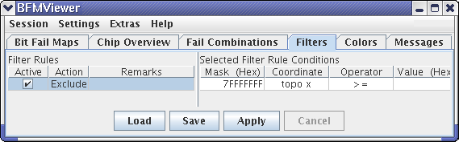

Filters
The Filters tab lists the filters available in the BFM Viewer and lets you create, edit, and manage them. Filters indicate specific conditions in the bit fail map displays.

The tab consists of two lists - Filter Rules and Selected Filter Rule Conditions - and a set of buttons to manage changes at the bottom.
Filter Rules
This list contains all filter rules that have been defined.
The rules are applied in the order in which they appear. For example, if a cell matches both a rule that hides it ("exclude") and another one further down in the list that displays it ("include"), the rule further down "wins" and the cell is displayed by the filter.
The list consists of these columns:
- Active: If a rule has a check mark in this column, is is currently active and applied to the bit fail map display. Clicking the check mark toggles deactivates and activates rules.
- Action: What happens to cells matching this rule:
- Exclude: If the cell matches the filter rule, it is hidden by the filter.
- Include: If the cell matches the filter rule, it is left to be
displayed by the filter.
Double-clicking an action field lets you choose the desired action from a shortcut menu.
- Remarks: Any comments that you have entered for this filter rule. Double-clicking a remark lets you edit it.
The shortcut menu in this list contains these commands:
- Insert Rule: Add a new rule above the selected rule.
- Append Rule: Add a new rule below the selected rule.
- Remove Rule: Delete the selected rule.
Selected Filter Rule Conditions
This list displays all conditions that belong to the rule selected in the Filter Rules list.
The BFM Viewer combines all conditions with a logical and. That is, a rule matches if each of its conditions matches.
The list consists of these columns:
- Mask: Before an address is compared in the condition, the specified
masked is applied to it (using logical and). Double-clicking a mask lets you
edit it.
The mask format can be set to decimal or hexadecimal via the shortcut menu.
- Coordinate: The address coordinate that is to be evaluated for the
filter rule condition.
Available coordinates include topological x and y as well as physical x, y, z, and d.
Double-clicking the coordinate lets you choose a different one from a shortcut menu.
- Operator: The operator to be used in comparing the coordinate with
the value
Available operators include <, >, <=, >=, =, and <> (not equal).
Double-clicking the operator lets you choose a different one from a shortcut menu.
- Value: The value with which to compare the coordinate.
The rule condition evaluates to true if the coordinate has the specified relation ship to the value. For example, if topo x has been chosen as the coordinate, = as the operator, and FF as the value, the condition is true if the (masked) topological x address is equal to FF.
Double-clicking a value lets you edit it.
The value format can be set to decimal or hexadecimal via the shortcut menu.
- Remarks: Any comments that you have entered for this filter rule condition. Double-clicking a remark lets you edit it.
The shortcut menu in this list contains these commands:
- Insert Condition: Add a new condition above the selected condition.
- Append Condition: Add a new condition below the selected condition.
- Remove Condition: Delete the selected condition.
- Mask Hexadecimal: Display the masks of all conditions as hexadecimal numbers.
- Mask Decimal: Display the masks of all conditions as decimal numbers.
- Value Hexadecimal: Display the values of all conditions as hexadecimal numbers.
- Value Decimal: Display the values of all conditions as decimal numbers.
Buttons
The Filters tab contains buttons to let you manage changes to filter rules and conditions:
- Load: Clicking this button lets you open a saved set of filter rules. The rules and their conditions ar read from the file and completely replace the current rules.
- Save: Clicking this button lets you save all current rules and their conditions to a file.
- Apply: Clicking this button applies the currently displayed rules and conditions to the bit fail maps. Any changes you make require you to click this button before they become active.
- Cancel: Clicking Cancel stops the calculation of the current filter results for all cells. The button becomes active after you have clicked Apply; it can be used to stop lengthy calculations, for example, because you want to further modify the filter rules.
Functional changes
- Introduced before SmarTest 6.3.2